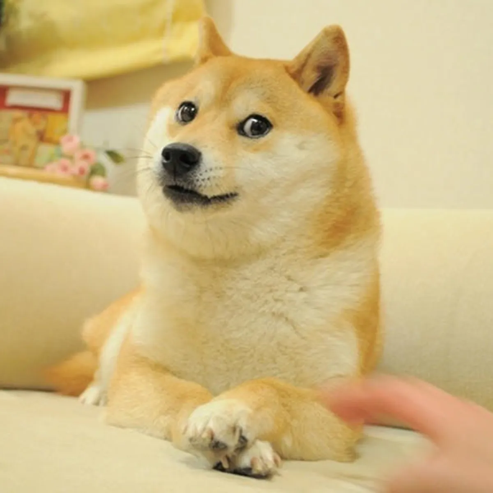

@doge_official
2013

Doge (Доге)
Символ 2010-х. Фотография сиба-ину по кличке Кабосу с забавным выражением морды, окруженная текстом шрифтом Comic Sans. Мем стал настолько популярным, что в его честь даже создали криптовалюту Dogecoin.